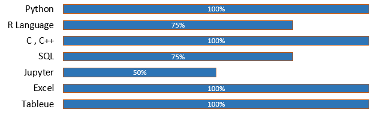

|
Mayank Kumar Singh
Software Developer
Currently I am working in Suraksha Firtech from Allahabad, Uttar Pradesh Since from 2019.I am working as a Software Engineer and mainly involve in the developing part of the system. I also handle the client site if any problem will get by the client as it reach to me.I have to resolve that issue and parallel make shure that in future that problem will not come again, so parallel up gradation of the existing system also that I have to manage.
|
Contact
Skills Highlight

Education
| Year |
Degree |
Marks |
Institute |
| 2016-2018 |
M.Tech (Master of Technology) in VLSI Design |
CGPA 7.7/10 |
SRM Institute of Science and Technology, Chennai, TamilNadu. |
| 2011-2015 |
B.Tech (Bachelor of Technology) in Electronics and Communication |
Percentage 75.67% |
Dr. A.P.J Abdul Kalam Technical University,Lucknow. |
| 2010-2011 |
12th (Senior Secondary) |
Percentage 60.8% |
Vikas Vidyaniketan, Visakhapatnam, Andhra Pradesh. |
| 2008-2009 |
10th (Matriculation Examination) |
Percentage 74.4% |
K.V Old Cantt Allahabad, Uttar Pradesh. |
Training & Certification in 2020
- LinkedIN Learning: Learning Python, Learning
Data Analytics.
- GreatLearning: AWS for Beginners
C for Beginners, Python Programming,Python for
Machine Learning, Excel for begineers.
- Udemy : Introduction to FPGA and Prototyping
with the Elbert, VSD-Physical Design Flow.
- Social Work:WHO (Occupation health and safety
for health workers in the context of COVID-19)
& ICMR-Poshan Abhiyaan.
Internship & Workshop
1. In 2020-Microsoft AZUS Team
2. In 2020-SLACK Clone Project Bootcamp
organized by CodingNinjas
3. In 2018-Suraksha Fertec
4. In 2014-IFFCO(Indian Farmers Fertilizer
Cooperation Limited Phulpur)
5. In 2012-MNNIT(Motilal Nehru National
Institute of Technology Allahabad)
Paper Publish
- In VSRD(International) Journal (2016 march), Title of paper Multyfunction crane robot.
- In 3rd (NCRDSET 17) held at ST.Annes collage of engineering and
technology, Chennai date-25 Feb 2017, Title of paper- A power efficient
voltage level shifter using current generator.
- Paper puplish in conference ICIDSET-1(2018) , Title of paper Low power
Reconfigurable FIR filter.
Hobbies
- Travelling & Meeting New People
- Sketching and Painting
- Playing Sports
- Being involved in Charities and Social Work